FUEL TANK > REMOVAL |
| 1. DISCHARGE FUEL SYSTEM PRESSURE |
Discharge the fuel system pressure (Click here).
| 2. REMOVE FUEL TANK CAP ASSEMBLY |
| 3. REMOVE NO. 1 FUEL TANK PROTECTOR SUB-ASSEMBLY |
 |
Remove the 5 bolts and fuel tank protector.
| 4. DISCONNECT FUEL TANK MAIN TUBE SUB-ASSEMBLY (for Single Tank Type) |
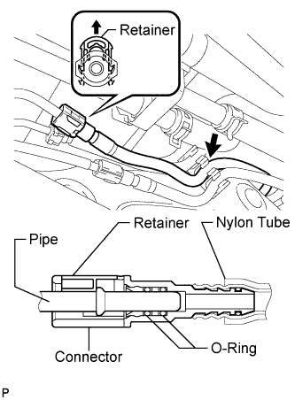 |
Detach the fuel tube clamp.
Pull up the retainer and disconnect the fuel tank main tube.
| 5. DISCONNECT FUEL TANK MAIN TUBE SUB-ASSEMBLY (for Double Tank Type) |
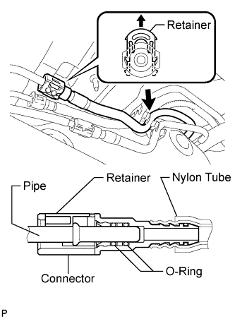 |
Detach the fuel tube clamp.
Pull up the retainer and disconnect the fuel tank main tube.
| 6. DRAIN FUEL |
Connect the cable to the negative (-) battery terminal.
Connect the intelligent tester to the DLC3.
Turn the engine switch on (IG).
Turn the intelligent tester ON.
Enter the following menus: Powertrain / Engine and ECT / Active Test / Control the Fuel Pump / Speed.
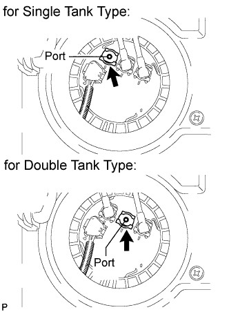 |
| 7. DISCONNECT CABLE FROM NEGATIVE BATTERY TERMINAL |
| 8. REMOVE REAR NO. 1 SEAT ASSEMBLY RH (for 60/40 Split Seat Type 40 Side) |
Remove the rear No. 1 seat assembly RH (Click here).
| 9. REMOVE REAR NO. 1 SEAT ASSEMBLY LH (for 60/40 Split Seat Type 60 Side) |
Remove the rear No. 1 seat assembly LH (Click here).
| 10. REMOVE REAR NO. 2 SEAT ASSEMBLY |
for Face to Face Seat Type:
Remove the rear No. 2 seat assembly (Click here).
except Face to Face Seat Type:
Remove the rear No. 2 seat assembly (Click here).
| 11. REMOVE REAR NO. 1 SEAT PROTECTOR |
 |
Detach the 10 claws and remove the 2 seat protectors.
| 12. REMOVE REAR NO. 2 SEAT PROTECTOR |
 |
Detach the 10 claws and remove the 2 seat protectors.
| 13. REMOVE REAR STEP COVER |
 |
Detach the 2 claws and remove the step cover.
| 14. REMOVE REAR DOOR SCUFF PLATE LH |
 |
Remove the screw.
Detach the 3 claws and 4 clips, and remove the scuff plate.
| 15. REMOVE REAR DOOR SCUFF PLATE RH |
| 16. REMOVE REAR FLOOR MAT REAR SUPPORT PLATE |
 |
Detach the 6 clips and remove the support plate.
| 17. REMOVE REAR SEAT COVER CAP (w/ Rear No. 2 Seat, except Face to Face Seat Type) |
 |
Using a screwdriver, detach the 3 claws and remove the rear seat cover cap.
| 18. REMOVE FRONT QUARTER TRIM PANEL ASSEMBLY LH |
w/ Sliding Roof:
Remove the front quarter trim panel assembly LH (Click here).
w/o Sliding Roof:
Remove the front quarter trim panel assembly LH (Click here).
| 19. REMOVE FRONT QUARTER TRIM PANEL ASSEMBLY RH |
w/ Sliding Roof:
Remove the front quarter trim panel assembly RH (Click here).
w/o Sliding Roof:
Remove the front quarter trim panel assembly RH (Click here).
| 20. REMOVE AIR DUCT PLUG (w/ Rear Air Conditioning System) |
 |
Detach the 2 claws and remove the plug.
| 21. REMOVE REAR AIR DUCT GUIDE (w/ Rear Air Conditioning System) |
 |
Remove the screw.
Detach the claw and remove the guide.
| 22. REMOVE FRONT FLOOR CARPET ASSEMBLY |
 |
w/ Rear Air Conditioning System:
Turn over the floor carpet.
w/o Rear Air Conditioning System:
Turn over the floor carpet.
| 23. REMOVE REAR FLOOR NO. 2 SERVICE HOLE COVER |
 |
w/ Rear Air Conditioning System:
Remove the 2 screws and air duct.
 |
Remove the service hole cover.
 |
Disconnect the fuel pump and fuel sender gauge connector.
| 24. DISCONNECT NO. 2 FUEL TANK BREATHER TUBE (for Single Tank Type) |
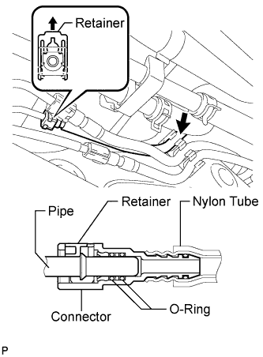 |
Detach the fuel tube clamp.
Pull up the retainer and disconnect the fuel tank breather tube.
| 25. DISCONNECT FUEL TANK RETURN TUBE (for Single Tank Type) |
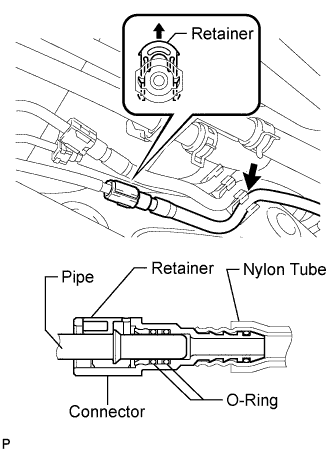 |
Detach the fuel tube clamp.
Pull up the retainer and disconnect the fuel tank return tube.
| 26. DISCONNECT FUEL TANK RETURN TUBE (for Double Tank Type) |
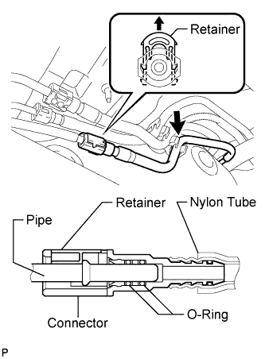 |
Detach the fuel tube clamp.
Pull up the retainer and disconnect the fuel tank return tube.
| 27. DISCONNECT NO. 2 FUEL MAIN TUBE SUB-ASSEMBLY (for Double Tank Type) |
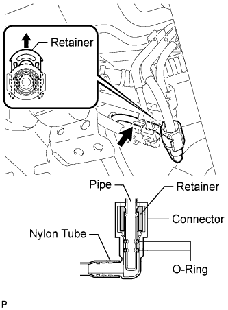 |
Detach the fuel tube clamp.
Pull up the retainer and disconnect the fuel tank main tube.
| 28. DISCONNECT NO. 2 FUEL TANK BREATHER TUBE (for Double Tank Type) |
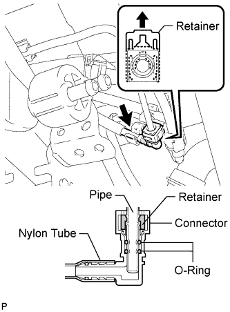 |
Detach the fuel tube clamp.
Pull up the retainer and disconnect the fuel tank breather tube.
| 29. DISCONNECT FUEL TANK BREATHER TUBE (for Single Tank Type) |
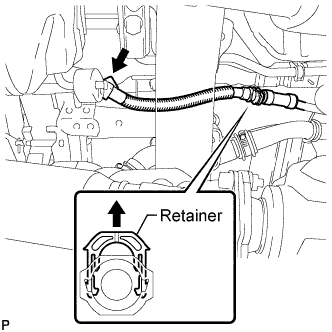 |
Detach the fuel tube clamp.
Pull up the retainer and disconnect the fuel tank breather tube from the filler pipe.
| 30. DISCONNECT FUEL TANK BREATHER TUBE (for Double Tank Type) |
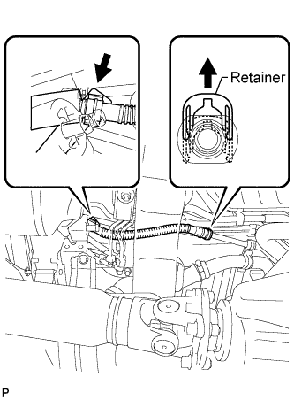 |
Detach the fuel tube clamp.
Pull up the retainer and disconnect the fuel tank breather tube from the filler pipe.
| 31. DISCONNECT FUEL TANK TO FILLER PIPE HOSE (for Single Tank Type) |
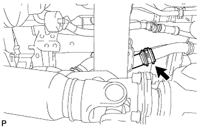 |
Disconnect the hose from the filler pipe.
| 32. DISCONNECT FUEL TANK TO FILLER PIPE HOSE (for Double Tank Type) |
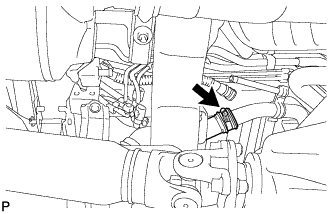 |
Disconnect the hose from the filler pipe.
| 33. REMOVE FUEL TANK SUB-ASSEMBLY |
Place a transmission jack under the fuel tank.
 |
Remove the 2 bolts, 2 clips, 2 pins and 2 fuel tank bands.
| 34. REMOVE FUEL TANK MAIN TUBE SUB-ASSEMBLY AND FUEL TANK RETURN TUBE SUB-ASSEMBLY (for Single Tank Type) |
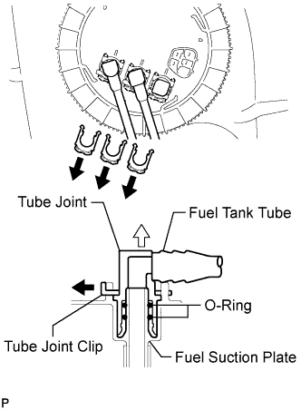 |
Remove the 3 fuel tube joint clips and pull out the 2 fuel tubes and No. 1 fuel tube joint.
 |
Remove the 2 fuel tubes from the fuel tank.
| 35. REMOVE FUEL TANK MAIN TUBE, FUEL TANK RETURN TUBE AND NO. 2 FUEL TANK MAIN TUBE SUB-ASSEMBLY (for Double Tank Type) |
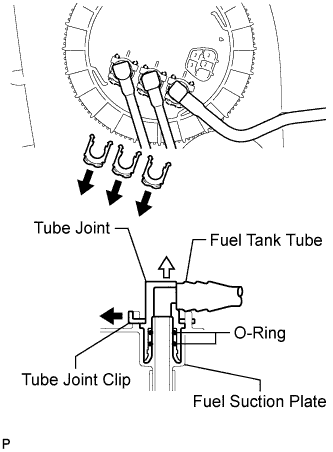 |
Remove the 3 fuel tube joint clips and pull out the 3 fuel tubes.
 |
Remove the 3 fuel tubes from the fuel tank.
| 36. REMOVE FUEL SUCTION WITH PUMP AND GAUGE TUBE ASSEMBLY |
 |
Using SST, loosen the retainer.
Remove the retainer.
Remove the fuel suction with pump and gauge tube assembly from the fuel tank.
Remove the gasket from the fuel tank.
| 37. REMOVE FUEL TANK TO FILLER PIPE HOSE |
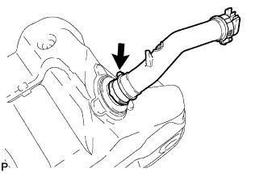 |
Remove the hose from the fuel tank.
| 38. REMOVE NO. 1 FUEL TANK HEAT INSULATOR |
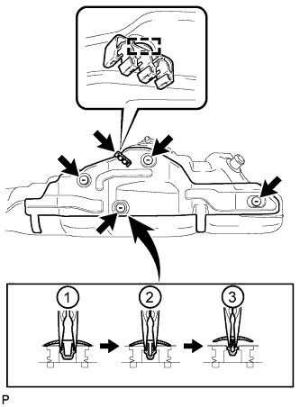 |
Remove the fuel tube clamp from the heat insulator.
Using needle-nose pliers, remove the 4 clips shown in the illustration and then remove the heat insulator.